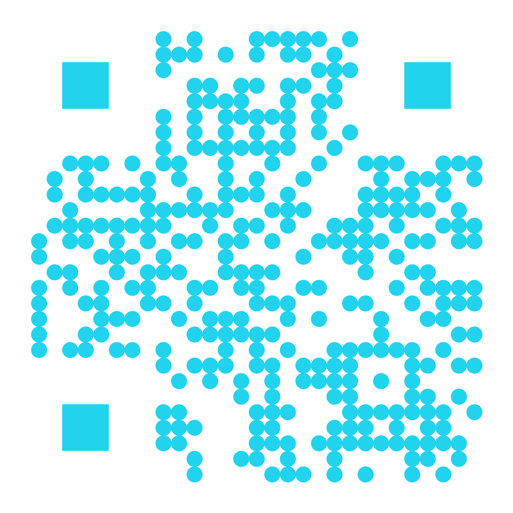

Transformando el desarrollo de software con IA para crear soluciones más eficientes, rápidas y de mayor calidad.
12 de Noviembre de 2025
Ingeniería (FCGS-ME)

Cuando desarrollar software era un proceso lento y tedioso.
Procesos lentos, repetitivos y propensos a errores
ChatGPT, Claude, Gemini - Impacto medible en tu equipo
Proyectos reales donde Copilot marcó la diferencia
Desarrollo de sistema de actualización de firmware de ECUs para solucionar reprocesos masivos
Desarrollo completado en 1 día usando GitHub Copilot, el tiempo estimado sin IA seria de más de 1 mes por reduccion de tiempo de investigacion
Solución exitosa para 4,500 electrónicas con un coste de mano de obra de 1,500 euros en vez de 63,000 euros pedidos por fabricante
Comparar imagenes de parrillas nuevas, sucias y limpiadas
Tiempo de Desarrollo en 50 minutos mientras explicabamos copilot + 6 horas de ajustes por parte de ellos en vez de subcontratar
Diseñar una solucion de visión artificial coste de unos 20,000 euros coste interno 7 horas de trabajo
Crear una presentación web interactiva cyberpunk para demostrar el poder de GitHub Copilot
Desarrollo 100% asistido por GitHub Copilot en tiempo real, tardando unas 6 horas en vez de 2 semanas
Presentación de una webcompletamente funcional con efectos avanzados
Ejemplo práctico: La diferencia real entre usar IA desde el navegador vs tenerla integrada en tu IDE
ChatGPT, Claude, Gemini...
Click para ver demostración
VS
IA directamente en tu IDE
Click para ver demostración
Todas las herramientas son corporativas y con licencias, gestionadas por BOSCH - BSH.
En caso de necesitar soporte o formación adicional, no duden en contactarme.
Pablo Arroyo Arenas - Pablo.arroyo@bshg.com
© 2025 Innovalia. Presentación generada con GitHub Copilot.
Escanea el código QR para acceder